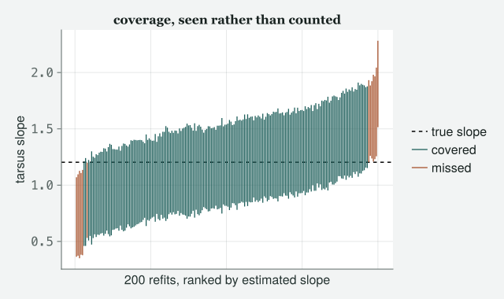
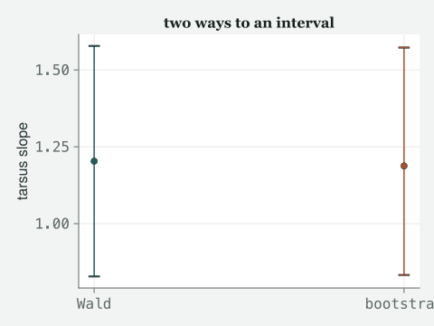

The thread every chapter has been pulling since Class 2 without naming it: draw new data from what the model claims, and watch how much an estimate can wander before you decide to trust it.
Draft
All ten classes of version 1 run from start to finish, with Appendix A, the preface and the coda. Every number and figure on this page comes out of code that was run to make the page. The writing is still a draft.
Engines DRM.jl 0.7.1 at 26f4c4ddc (Julia 1.10.0) · drmTMB 0.7.0 (R 4.6.0) Provenance Every code block and printed result below was run, start to finish, when this page was made; nothing is typed from memory. Caveat From the second beat onward the data are the real 2012 sparrows (data/2012/MBodySize.csv, 171 house sparrows, Lundy Island, provenance in data/2012/README.md). The opening generator is a simulated flock of sparrows built to look like that file; it is here as the appendix’s first worked example of what a seed does.
A note on what this appendix is. It is not a rung. It does not free a constant the way each class does. It gathers a thread that runs through every class from Class 2 on, where the Julia summary ends with one cell that draws new data from the fitted model and refits it. Here the thread gets a room of its own: what a seed actually promises, what it means to simulate what a model claims, what “coverage” means as a property you can check by counting, and the parametric bootstrap as an interval built the same way. You can read it straight after Class 2; everything in Julia it uses beyond that class is explained where it first appears.
Objectives
By the end of this appendix you should be able to:
Say what a random seed actually promises, what happens the moment you change one digit of it, and why the book hands every draw its generator by name.
Draw new data from a fitted model, refit, and watch a coefficient wander, without mistaking the wander for noise you introduced by hand.
Define coverage as a property of a procedure, not of one interval, and attach a Monte Carlo standard error to any coverage fraction you report.
Build a parametric bootstrap interval from a set of refits, and say in one sentence when it and the ordinary estimate-plus-or-minus-two-standard-errors interval part company.
The class
Itchy’s office, later in the week. TOTO has a laptop and a mug that says
“p < 0.05 or it didn’t happen”, which nobody has had the heart to
correct. MOMO is reading something on her phone. EDDIE is standing,
because Eddie always stands.
Itchy
Before the real sparrows, I want a flock I built myself, because a flock
you built is the one place you know the truth. Here is a recipe for one
hundred and sixteen sparrows: wing from tarsus and sex, plus noise.
Toto
Made-up birds.
Itchy
Made-up on purpose, and made-up in a way I can repeat, which is the
point of the next ten minutes. It is where a promise gets made that the
rest of this appendix is about keeping, or breaking on purpose.
Momo
Why one you can repeat?
Itchy
Watch.
A seed is a promise
Itchy
Here is the recipe, written as a function so I can call it three times
without typing it three times. The line to keep your eye on is the one
that calls it.
Two things in the cell before the birds.
function make_flock(n; rng) ... end is Class 1’s one-line
flip(n; rng) grown a body: name, arguments, several lines,
end, and the last expression is what comes back, here a
table. The keyword after the semicolon has no default, so
make_flock cannot be called without naming its generator;
that is the house rule, enforced by the language rather than by me.
Inside, randn(rng, n) is n draws from a bell
curve with mean zero and spread one, and
rand(rng, ["female", "male"], n) is n coin
flips that land on words.
Momo
Those are the made-up birds.
Itchy
Those are the made-up birds, and here is the point of them. Without
looking at the first run, I am going to build the flock again from a
fresh generator with the same seed.
true. Every one of 116 birds, identical to the decimal place. The first
bird’s wing was 78.5 mm both times. That is the whole promise a seed
makes: not “random”, but “reproducible on purpose”. Anyone with this
file, this Julia version and this line gets my exact flock back,
forever.
Toto
So it is not really random.
Itchy
It is exactly as random as a shuffled deck someone photographed before
they shuffled it. The shuffle is real. The photograph means we can all
argue about the same deck. Now watch me break the promise on purpose, by
changing one digit.
One digit, and false. The first bird went from 78.5 mm to 77.4 mm, and
every bird after it is a different bird too, not a slightly adjusted
version of the old one. There is no such thing as “close” here. A seed
either reproduces a flock exactly, or it hands you a flock that shares
nothing with the last one except the recipe that built it. That is the
whole of what a seed is, and it is the fact this entire appendix depends
on: I am about to draw two hundred flocks on purpose, and I need every
one of you to be able to get the same two hundred back.
Momo
Every script I have ever been sent has Random.seed!(316) at
the top and no rng anywhere. Why does this book refuse it?
Itchy
Because of where the seed lives. Class 1 called it a hidden switch; this
is the one place in the book you will see the switch thrown, so you know
what the rule protects you from. Look at it; do not copy it.
# The wrong tool, shown once. Random.seed! resets a generator the whole# session shares; every later draw that names no rng comes from it.Random.seed!(316)global_first =rand(2)global_second =rand(2) # depends on the line above having runown_first =rand(MersenneTwister(316), 2)own_second =rand(MersenneTwister(316), 2) # depends on nothing(global_first == global_second, own_first == own_second)
(false, true)
Itchy
Same seed, four draws, and only one pair agrees.
Random.seed! set the shared generator once; the first
rand(2) used it up a little, so the second got the next
numbers along. What a line gives you depends on every unseeded draw that
ran before it, in this cell, in the cell above, in a package you did not
know draws at all. The two lines that name their own
MersenneTwister(316) agree because each carries its seed
with it: paste either into a fresh session, or into the middle of Class
8, and it gives the same two numbers. A draw whose seed is in the line
is a promise you can read; a draw whose seed is somewhere in the history
is not.
Simulate what the model claims
Itchy
Enough of the made-up birds. Load the real ones.
raw = CSV.read("../data/2012/MBodySize.csv", DataFrame)sparrows =select(raw, :BirdID, :Tarsus, :Wing)nrow(sparrows)
171
Momo
This is fit1 from Class 2.
fit_appA =drm(bf(@formula(Wing ~ Tarsus)), Gaussian(); data = sparrows)true_slope =coef(fit_appA, :mu)[2]coeftable(fit_appA)
Estimate
Std.Error
z
Pr(>|z|)
Lower 95%
Upper 95%
mu: (Intercept)
55.4569
3.56377
15.56
<1e-53
48.472
62.4417
mu: Tarsus
1.20311
0.191294
6.29
<1e-09
0.828182
1.57804
sigma: (Intercept)
0.631739
0.0540738
11.68
<1e-30
0.525757
0.737722
Itchy
The tarsus slope is 1.203. In Class 2 we treated that as the answer and
moved on. Here I want to treat it as a claim, and ask the model to
defend it. If the model is right about how these birds were generated,
and I draw brand-new birds from that same claim, refitting should give
me back something close to 1.203, wobbling by an amount the model itself
can tell me about.
rng_sim =MersenneTwister(100100) # a seed is a promise: anyone who runs this line gets the same drawsims =simulate(fit_appA; nsim =200, rng = rng_sim)functionrefit_once(y) d =DataFrame(Tarsus = sparrows.Tarsus, Wing = y) f =drm(bf(@formula(Wing ~ Tarsus)), Gaussian(); data = d) ci =confint(f) (slope =coef(f, :mu)[2], lower = ci[2].lower, upper = ci[2].upper)endrefits = [refit_once(sims[:, k]) for k in1:size(sims, 2)]slopes = [r.slope for r in refits]los = [r.lower for r in refits]his = [r.upper for r in refits]length(slopes)
200
Toto
Two hundred fits from two hundred flocks that do not exist.
Itchy
Two hundred flocks the model itself says could have existed, which is a
different thing from not existing. Read the cell before the numbers,
because you will adapt it. sims is a matrix with one
invented flock per column; sims[:, k] is its k-th
column, a colon in a slot meaning all of that dimension, and
size(sims, 2) is how many columns it has.
refit_once returns three named numbers in one bracket, a
NamedTuple, so r.slope reaches the slope
the way sparrows.Wing reaches a column; the comprehension
refits every column in turn, and the three after it pull one field each
out of the two hundred results. Mean of the refitted slopes: 1.188.
Spread of the refitted slopes: 0.196. That spread is not a mistake and
not noise I introduced. It is what “uncertainty in a slope” actually
looks like when you stop trusting one number and watch two hundred.
Figure 1: Tarsus slope refitted on 200 parametric draws from the fitted model; vertical line at the original fitted slope.
Eddie
It is centred on the real fit.
Itchy
It should be. The real fit is the generator. That is the whole
trick of “simulate what the model claims”: you are not testing whether
the model is correct about the birds, you are testing whether the model
is being consistent with itself, which is a smaller claim and a useful
one on its own.
The trap, once
Toto
(comparing numbers) The raw spread of one simulated column does
not match σ.
raw_spread =std(sims[:, 1])dev_spread =std(sims[:, 1] .-fitted(fit_appA))dev_all = [std(sims[:, k] .-fitted(fit_appA)) for k in1:size(sims, 2)]dev_mean =mean(dev_all)
1.8793004431400513
Itchy
σ is 1.881. The raw spread of that one simulated column is 2.286, which
looks nothing like it, and if you stopped there you would conclude the
model cannot reproduce its own noise. It can. Each simulated column
still carries fit_appA’s fitted mean, tarsus and all, so
its raw spread is close to the raw wing spread, not σ. Subtract
the fitted mean first, and only then are you looking at noise alone:
2.124. That is not σ to the decimal place, and it should not be: it is
one column of two hundred, and a single column’s spread wobbles around σ
by chance. Do it for all two hundred and average, and it lands on 1.879,
a hair from σ and no longer at the mercy of which column you happened to
pick. One subtraction, one trap avoided, and I want you to feel where it
bites: it looks exactly like a broken model until you remember what a
simulated column actually contains.
Coverage as a check on an interval
Momo
Every refit came with a confidence interval. Two hundred of them,
sitting there unused.
Itchy
Not unused. About to earn their keep. A 95 percent interval is usually
described to students as “we are 95 percent confident the true value is
in here”, which is not what it means and cannot be checked from one
interval alone. Here is what it actually claims, and here is why we can
check it: if I build this same kind of interval on flock after flock
drawn from a known truth, the procedure should catch that truth
about 95 times in 100. Not this interval. The procedure.
R replicates, one indicator per replicate for “did this
interval catch the true slope”, averaged. We know the true slope here,
because we chose it: it is fit_appA’s own slope, the thing
every one of the two hundred flocks was drawn to be consistent with. The
interval confint gives you is the plain kind, the estimate
plus or minus about two standard errors; statisticians call it a Wald
interval, that is the name you will meet in other people’s methods
sections, and we will meet a rival to it in a minute. “Nominal” in the
printout is the rate the interval claims for itself.
It is not exactly 0.95, and it should not be. First the
cell: zip(los, his) walks the two vectors side by side, so
each turn of the comprehension gets one interval’s (lo, hi)
pair, and lo <= true_slope <= hi is a single
true-or-false, “did this one catch it”; mean of two hundred
trues and falses is the fraction of trues, which is the formula on the
board. That plus-or-minus is the Monte Carlo standard error: the wobble
in the fraction that comes only from having used two hundred flocks
rather than infinitely many. 0.935 with a Monte Carlo standard error of
0.0174 is what “consistent with 95 percent” looks like at two hundred
replicates. Report a coverage fraction without its own standard error
and you have handed someone a number with no way to tell noise from a
real problem. That is a rule for the rest of this course, not only for
today.
Toto
Show me the two hundred. Not the average.
Itchy
Ranked by where each one landed, with the true slope drawn as one line
through all of them. sortperm(mids) gives the
order that would sort the midpoints, so indexing the other
vectors by it ranks them the same way, and .!cov_s flips
every true to false, picking out the misses.
mids = (los .+ his) ./2ordc =sortperm(mids)los_s, his_s, cov_s = los[ordc], his[ordc], covered[ordc]idx =1:nrepfig3 =Figure(size = (640, 380))ax3 =Axis(fig3[1, 1]; xlabel ="200 refits, ranked by estimated slope", ylabel ="tarsus slope", title ="coverage, seen rather than counted", xticksvisible =false, xticklabelsvisible =false)hlines!(ax3, [true_slope]; color =:black, linewidth =1.5, linestyle =:dash, label ="true slope")rangebars!(ax3, idx[cov_s], los_s[cov_s], his_s[cov_s]; linewidth =1.3, color =Cycled(1), label ="covered")rangebars!(ax3, idx[.!cov_s], los_s[.!cov_s], his_s[.!cov_s]; linewidth =1.3, color =Cycled(2), label ="missed")Legend(fig3[1, 2], ax3; framevisible =false)fig3

Figure 2: All 200 refit intervals, ranked by estimated slope, against the true slope (dashed line). A teal interval crosses the line; a rust interval misses it — these are the intervals responsible for the coverage rate above falling short of a perfect 1.0000.
Eddie
13 miss it.
Itchy
13 out of two hundred is exactly what “not quite ninety-five percent”
looks like once you can see every interval instead of one summary
number.
Eddie
So a coverage study is just this, run at the scale of a real question.
Itchy
Exactly this, at the scale of a real question, and usually asking “does
the interval still cover when I change something about the design”, not
“does it cover at all”. The rival to it I promised is next.
The parametric bootstrap
Itchy
The two hundred refits are also, quietly, an interval of their own. Not
from the standard errors this time; from where the estimates themselves
landed: the value that two and a half percent of the refitted slopes
fall below, and the value that two and a half percent fall above. That
is a bootstrap interval, and “parametric” because the new flocks came
from the fitted model rather than from reshuffling the real rows.
quantile hands back both cut points at once, and the comma
on the left catches them, as lo, hi = extrema(x) did in
Class 1.
The two bars would sit right on top of each other.
Itchy
They would — the matching edges are closer together than the line
drawing them is wide, so a bar chart of the two intervals side by side
would show agreement it cannot actually resolve. Here is the gap itself,
not the bars.
fig2 =Figure(size = (560, 360))ax2 =Axis(fig2[1, 1]; xticks = (1:2, ["lower bound", "upper bound"]), ylabel ="bootstrap − Wald (tarsus slope)", title ="how far the two intervals disagree")xlims!(ax2, 0.5, 2.5)hlines!(ax2, [0.0]; color =:black, linestyle =:dash, label ="no disagreement")rangebars!(ax2, [1, 2], [min(0, gap_lo), min(0, gap_hi)], [max(0, gap_lo), max(0, gap_hi)]; whiskerwidth =14, color =Cycled(1))scatter!(ax2, [1, 2], [gap_lo, gap_hi]; markersize =10, color =Cycled(1))axislegend(ax2; position =:rt)fig2

Figure 3: Where the bootstrap interval’s two bounds sit relative to the Wald interval’s, in tarsus-slope units. Both bars point inward: the bootstrap interval is tucked a few thousandths narrower than the Wald interval at each end, not shifted to one side. Drawn at the scale of the disagreement itself the gap is visible; drawn on the interval’s own scale, as in the printed bounds above, it is a fraction of a pixel wide.
Momo
Wald gives 0.828 to 1.578. Bootstrap gives 0.833 to 1.573. Those are
almost the same interval — the plot says by how much: 0.0047 at the
lower bound, -0.0052 at the upper bound, both a few thousandths of a
slope unit.
Itchy
They are, here, and that agreement is itself the finding, not a
formality on the way to a more interesting one. One honest sentence, and
hold on to it: the two intervals agree closely exactly when the thing
being estimated is far from any boundary and its sampling distribution —
the spread of values the estimate would take if you repeated the study
over and over — is close to symmetric, the way a slope from a hundred
and seventy-one birds is; they pull apart hardest for a parameter that
is skewed, or pinned against a wall it cannot cross, and that is not a
hypothetical case; it is what Class 8 asks you to estimate.
Where this thread earns its keep
Toto
So all of this was practice.
Itchy
All of this was practice on a parameter with nowhere awkward to go. A
slope can be negative, positive, anything on the real line, and its
sampling distribution knows it. A variance component cannot be negative,
and when the truth sits at or near zero the estimate piles up exactly on
the boundary, and the naive test built for the easy case gets the wrong
answer with total confidence. You already have the tool for that. It is
the function simulate called on a fitted model, refit two
hundred or two thousand times, and counted, exactly as above. Class 8
runs precisely this procedure on a variance component instead of a
slope, and that is where a naive test would have quietly lied to you,
and where the correction earns a whole class instead of an appendix.
Momo
(closing the laptop) A seed, a refit loop and a count. That is
most of what statistics turns out to be.
Itchy
Most of what checking statistics turns out to be, which is not
the same claim, but it is the one I actually believe.
Summary
Stats stuff
A seed is a promise, not an apology.MersenneTwister(k) is a random-number recipe started at k, which is why it can be repeated: the same seed on the same code reproduces the same data exactly, anywhere, forever. Change one digit of the seed and every downstream number changes, with nothing “close” about the result.
Keep the seed in the line. A draw that names its generator, rand(rng, ...) or simulate(fit; rng = ...), means the same thing wherever it sits. Random.seed! sets a generator the whole session shares, so what a later draw returns depends on every unseeded draw before it. This page threw that switch once, to show it; the book’s code never does.
Simulate what the model claims. Treat the fitted model as a generator of new data, draw from it, and refit. This checks the model’s internal consistency, not whether it is the correct model for the world; a coefficient’s spread across refits is what “uncertainty in that coefficient” concretely looks like.
The fitted-subtraction trap. A simulated response still carries the model’s fitted mean structure. Its raw spread reflects that mean structure, not σ alone; subtract the fitted values first before comparing spreads, or a correct model will look broken.
Coverage. A property of a procedure, checked by repetition: across many draws from a known truth, what fraction of the resulting intervals actually contain that truth. Never report a coverage fraction without its own Monte Carlo standard error, sqrt(p(1 − p)/R).
The parametric bootstrap. An interval built from where a set of refits actually land (empirical quantiles of the estimate), rather than from a standard error and a normal reference. It agrees closely with a Wald interval when the estimator is far from a boundary and roughly symmetric, and diverges from it when the estimator is not, which is exactly the situation Class 8’s variance component is in.
Julia you used
Each is explained where it first appears above; a reader who has done Classes 1 and 2 has met nothing else on the page. The class in brackets teaches the same construct in its own hour.
function make_flock(n; rng) ... end. The long form of Class 1’s one-line definition; the last expression is what it returns. The keyword with no default is the house rule in code (Class 3).
randn(rng, n) and rand(rng, ["female", "male"], n). Draws from a standard bell curve, and draws with replacement from a list; the generator is always the first argument.
Random.seed!(k), shown once and not used. Resets the generator the session shares; every later draw with no rng comes from it, so a line’s answer depends on its history.
sims[:, k] and size(sims, 2). One column of a matrix, the colon meaning all rows, and the number of columns (Class 3).
(slope = ..., lower = ..., upper = ...) and r.slope. A NamedTuple returned from a function, read by field name (Class 5a, Class 7).
[f(lo, hi) for (lo, hi) in zip(a, b)]. A comprehension over two vectors walked side by side (Class 3).
mean(covered) on trues and falses. The fraction that are true: two hundred yes-or-no answers become a coverage rate in one line.
sortperm(v) and mask[.!mask]. The order that would sort v, used to rank other vectors the same way; and a mask with every entry flipped (Class 6, Class 8).
boot_lo, boot_hi = quantile(v, [0.025, 0.975]). Two quantiles at once, caught by a comma on the left, as extrema was in Class 1.
Calls you used
simulate(fit; nsim = k, rng = rng_sim): k fresh response draws from a fitted model, nobs × k, conditional on the fitted mean and dispersion structure; the same call Class 2 introduced.
fitted(fit), sigma(fit): the fitted mean vector and the residual scale, needed to check a simulated column against the model it came from.
confint(fit): per-parameter (lower, upper) named tuples; index by parameter position within the relevant sub-model. confint(fit; level = 0.8) changes the level the interval claims.
mean, std, quantile(v, [p1, p2]): from Statistics, the building blocks of both the coverage count and the bootstrap interval.
@printf: from Printf, for reporting a rate or an interval with a stated number of decimal places rather than whatever Julia’s default show happens to choose.
rangebars!(ax, xs, lows, highs): one vertical bar per interval, the CairoMakie verb behind the caterpillar and the gap plot.
Further reading
Graded by depth.
Sandve, G. K., Nekrutenko, A., Taylor, J. & Hovig, E. (2013) “Ten simple rules for reproducible computational research”, PLoS Computational Biology 9(10):e1003285. Start here, not with the mathematics. Rule 1 is essentially “for every result, keep the seed”, which is the whole first half of this appendix in one sentence written for a much wider audience than statisticians.
Efron, B. (1979) “Bootstrap methods: another look at the jackknife”, The Annals of Statistics 7(1). The paper that invented the idea this appendix’s fourth beat uses: build an interval from where resampled or resimulated estimates actually land, rather than from a formula and a normal reference. Read it for the original motivating examples, which are smaller and stranger than the method’s later reputation suggests.
Davison, A. C. & Hinkley, D. V. (1997) Bootstrap Methods and Their Application, Cambridge University Press. The standard book-length treatment, including the parametric case used here (resampling from a fitted model rather than from the data directly) and a careful account of when a bootstrap interval and a Wald interval should be expected to disagree.
Morris, T. P., White, I. R. & Crowther, M. J. (2019) “Using simulation studies to evaluate statistical methods”, Statistics in Medicine 38(11):2074-2102. How to turn “simulate and refit” from a demonstration into a real study: what to vary, what to record, and how to report a coverage fraction properly, with its Monte Carlo standard error, every time.
Exercises
Graded by depth: the first three take ten minutes each. Every exercise names a file under data/ that exists; do it on your own organism as well where you have one. A check is a number computed from that file when this page was built — match it before going on. For every question, paste your code and then explain in your own words what each line does, as if to somebody who has read Class 2 and nothing past it; Class 1’s worked answer is the model.
Break the promise carefully. Run the appendix’s make_flock(116; rng = MersenneTwister(316)) and again with MersenneTwister(3160). Report whether the two flocks match, and the first bird’s wing under each seed. Then explain in one sentence why a “0” appended to a seed is just as different a seed as any other digit, even though it looks like a small change. Check: the flocks match is false; the first wing is 78.5 mm at 316 and 80.0 mm at 3160.
The trap, on a column of your choosing. The appendix fell into the fitted-subtraction trap on column 1 of sims. Do the same on column 200: report its raw spread and its spread after subtracting fitted(fit_appA), and say which of the two is the one to compare with σ. Check: raw 2.188, after subtraction 2.098, against σ = 1.881.
Which way did the misses go? From los and his, count the intervals that sat entirely above the true slope and the intervals that sat entirely below it, with count and a comparison (Class 1’s count(>(x), v) is one way). The two counts must add up to n_miss. One sentence: what would it tell you if nearly all the misses were on one side? Check: 7 above and 6 below, summing to 13.
Coverage at a different level. Refit the same 200 columns, asking confint(f; level = 0.8) for the interval this time, and compute the coverage of the 80 percent interval with its Monte Carlo standard error. Say whether it is closer to nominal or further from it than the 95 percent case, in units of its own standard error, and whether that surprises you. Check: 0.76 ± 0.0302 against a nominal 0.8000.
Bootstrap versus Wald, on purpose. Fit Wing ~ Tarsus + Sex to data/ch2/sparrows.csv, Class 2’s fit2, simulate 200 flocks with MersenneTwister(2), and refit each, keeping the Sex coefficient, the third entry of coef(f, :mu). Compare its bootstrap interval with the Wald interval from confint, as the appendix did for the tarsus slope, and report the gap at each bound. Is the pair closer or further apart than the tarsus-slope pair, and does that match the “far from a boundary, roughly symmetric” rule? Check: bootstrap 2.138 to 2.873; gaps 0.0636 and -0.0545.
A seed of your own choosing. Pick a seed by any rule you like (a birthday, a phone number, the current year), simulate 200 flocks from fit_appA with it, and report the 95 percent interval’s coverage with its Monte Carlo standard error. Then repeat with MersenneTwister(1). Do the two fractions agree to within their standard errors? One sentence on what would have to be true for them not to. Check: seed 1 gives 0.945 ± 0.0161; the appendix’s own seed gave 0.935 ± 0.0174, and the two differ by 0.42 combined standard errors.